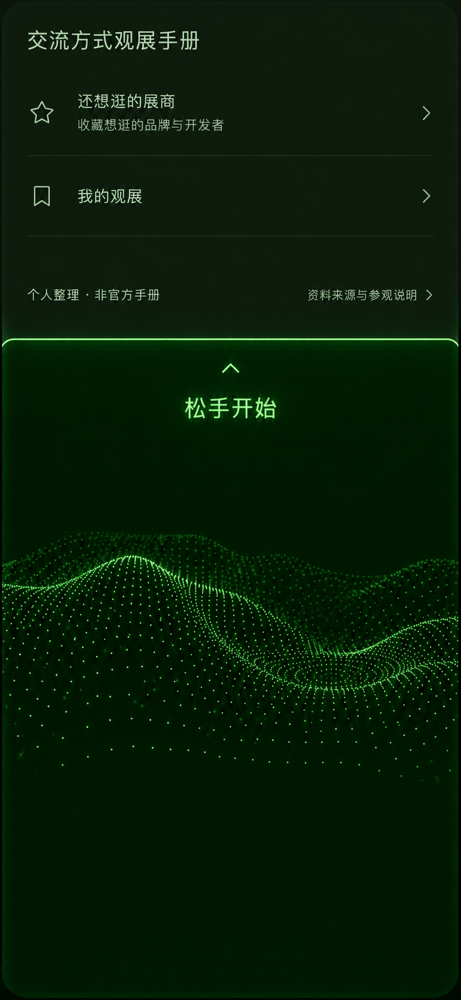
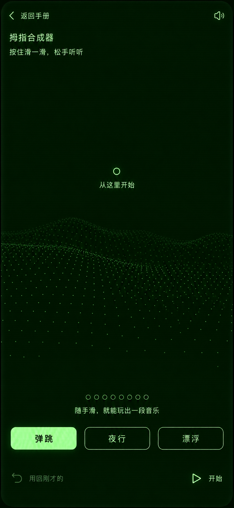
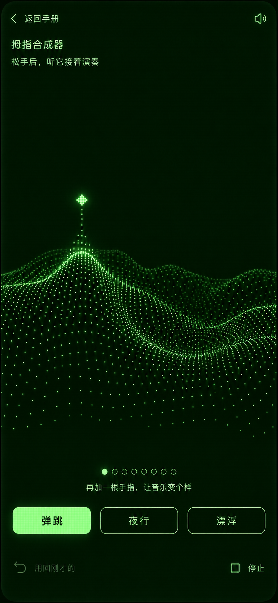
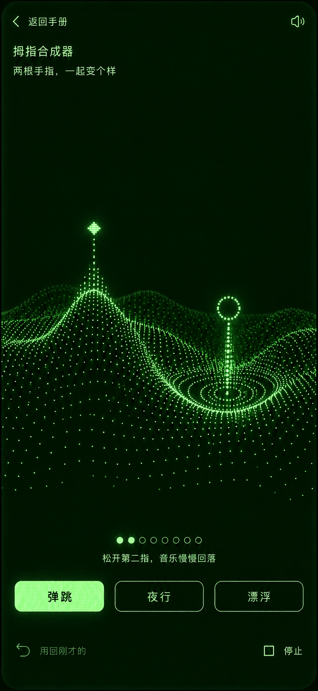
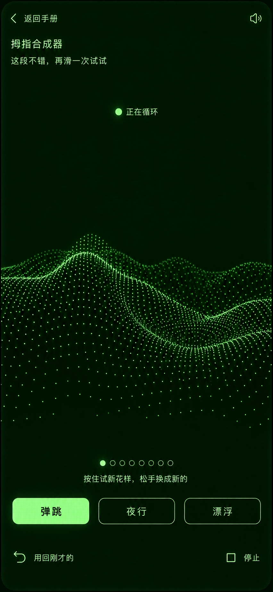

1. 上拉进入首页到底后继续上拉，揭开声音屏幕。到底露出「继续上拉，玩一点声音」，该文字也能点击进入。建议新增上拉距离 88 CSS px 后进入就绪态，提示「松手开始」；低于阈值松手回弹。入口不发声，预览无触点或播放按钮。松手 → 待机；未达阈值 → 首页。
2. 待机首次进入，声音尚未开始。低亮点阵、无触点、进度熄灭；引导圈只是提示，整个演奏区都可按。首次触摸开始鼓、低音和实时旋律；点「开始」只启动伴奏。无历史乐句时撤销禁用。首次触摸 → 单指；点击开始 → 伴奏播放。
3. 单指演奏用一根手指滑出一句。上下控制音高，左右控制柔亮。菱形触点绑定第一根手指；局部点阵随音高隆起、随声音变化亮度，鼓和低音推动全场起伏。首次演奏撤销禁用；已有历史句时撤销可用。加第二指 → 双指；全部松开 → 循环。
4. 双指演奏第二指推动整段音乐。第二指用空心环标记，以落点为相对原点；上下控制能量，左右控制空间。第二指离开时调制平滑回落，不结束乐句。第一指先离开时剩余手指保留第二指角色，不突然接管旋律；全部松开才成句。抬第二指 → 单指；全部松开 → 循环。
5. 松手循环听刚才的一句，或继续试新花样。移除手指标记，点阵随循环运动，进度逐步点亮。再次按下淡出旧旋律、演奏新句，鼓和低音继续；松手后新句在下一个乐句起点替换，等待期间保留尾音与伴奏。图示已有上一句，因此撤销可用。再按 → 单指；撤销 → 前一句；停止 → 暂停。